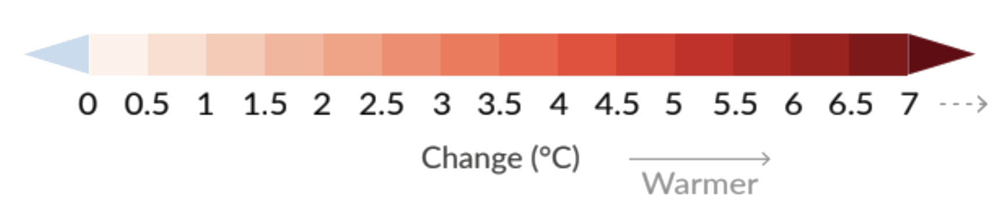
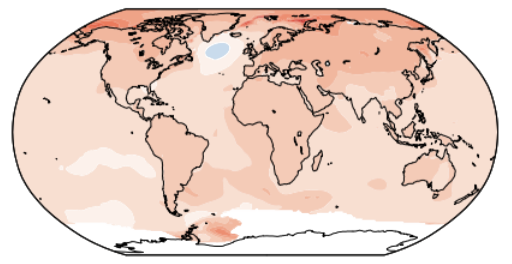
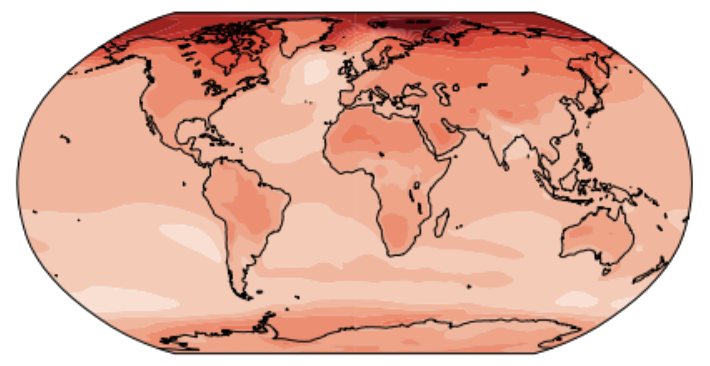
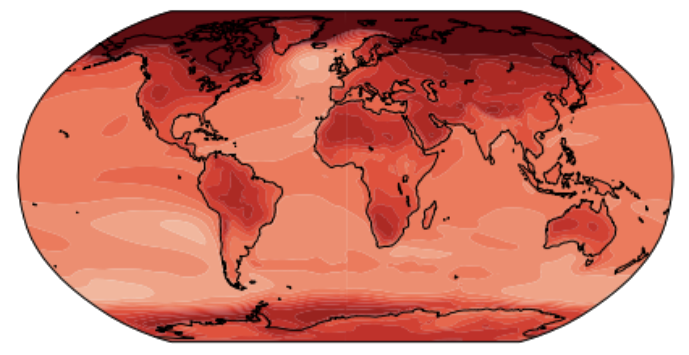

<%= await t.include("lib/_head_maps.html") %>

<% if (COPY.labels.hed_map) { %>
<h1><%= t.smarty(COPY.labels.hed_map) %></h1>
<% } %>

<div id="maps" class="graphic" role="img" <% if (COPY.labels.screenreader_map) { %>
  aria-label="<%- COPY.labels.screenreader %>" <% } %> >
  <div class="graphic-wrapper">
    <div class="map-key mobile"></div>
    <div class="map-container">
      <h4>Today: +1.8°F <i>(1°C)</i></h4>
      </div>
    <div class="map-container"><h4>Projected: +3.6°F <i>(2°C)</i></h4></div>
    <div class="map-container"><h4>Projected: +7.2°F <i>(4°C)</i></h4></div>
    <div class="map-key desktop"></div>
  </div>
</div>

<% if (COPY.labels.footnote_map) { %>
<div class="footnotes">
  <p><strong>Notes: </strong><%= COPY.labels.footnote_map %></p>
</div>
<% } %>

<div class="footer">
  <% if (COPY.labels.source) { %>
  <p>Source: <%= COPY.labels.source %></p>
  <% } %> <% if (COPY.labels.credit) { %>
  <p>Credit: <%= COPY.labels.credit %></p>
  <% } %>
</div>

<script src="./map.js"></script>

<script type="text/javascript"></script>

<%= await t.include("lib/_foot.html") %>
